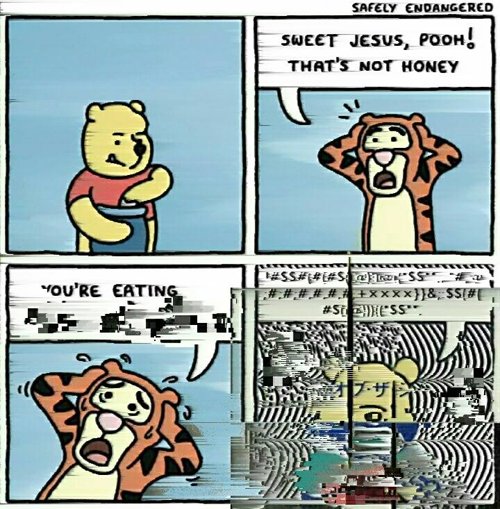
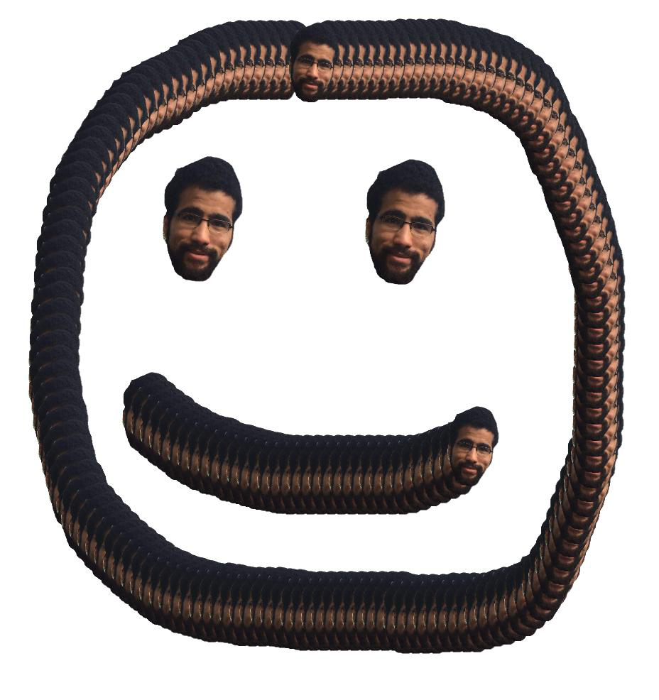

Tributes are being paid to the pornstar Zoie Burgher who has died after being shot while signing autographs in Orlando. Police confirmed the 22-year-old was signing autographs with the band Before You Exit at a merchandise table at The Plaza Live in Orlando, where they had just performed, when she was shot by a gunmen who then turned the gun on himself. Shortly after news of her death emerged #RIPZoie began trending on Twitter with many paying tribute to Burgher, including those from the entertainment and social media world. The band who Burgher was touring with paid a lengthy tribute to her on Twitter, writing that they have lost an "angel, sister and beloved friend".





The death toll seems to have tripled over the years.